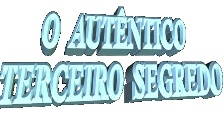
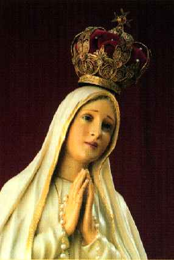
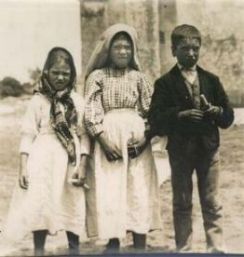
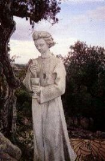
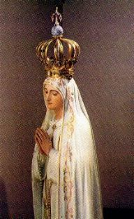
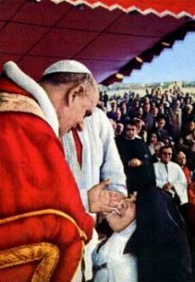
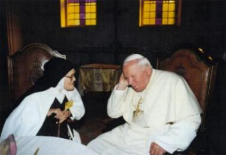
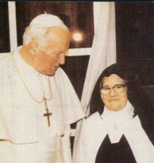

 Na realidade, nunca existiu uma ordem explícita de NOSSA
SENHORA para que a Mensagem não fosse revelada ao povo. A Irmã Lucia esclarece,
Na realidade, nunca existiu uma ordem explícita de NOSSA
SENHORA para que a Mensagem não fosse revelada ao povo. A Irmã Lucia esclarece,
que imbuída de um cuidado todo pessoal nasceu-lhe aquela inspiração interior,
de revelar o Terceiro Segredo somente depois de 1960, porque imaginou que a
partir daquela época a humanidade acolheria com mais compreensão e respeito,
o conteúdo da Mensagem. Por isso, escreveu o texto do Terceiro Segredo e na
época, enviou ao Papa Pio XII, através das autoridades eclesiásticas portuguesas,
que o levaram para o Vaticano, onde ficou definitivamente guardado no
Arquivo Secreto do Santo Ofício.
No dia 13 de Maio de 2.000, quando Sua Santidade
o Papa João Paulo II viajou a Fátima para beatificar os dois pastorzinhos Jacinta e Francisco
Marto, o Cardeal Angelo Sodano na homilia da Santa Missa, falou sobre o documento
e revelou o conteúdo do Terceiro Segredo. Todavia, ele não leu o texto original escrito pela Irmã,
apenas fez considerações sobre a Mensagem. Este procedimento embora tenha desapontado
a humanidade cristã que aguardava ansiosamente a divulgação da revelação Divina, e que
provavelmente esperavam algum fato extraordinário, na realidade sintetizava a verdade
da Mensagem recebida pela Irmã Lúcia. Então ficou evidente que o sentido da visão
não era de mostrar um filme sobre o futuro, sobre coisas que podiam acontecer, mas
realçar um acontecimento milagroso (o atentado contra o Papa João Paulo II na praça
de São Pedro, no Vaticano, no dia 13 de Maio de 1981, por um homem turco) e mostrar
os sofrimentos deste século, as dificuldades da Igreja e o quanto tinha que sofrer
os diversos Papas, os bispos, sacerdotes e os verdadeiros cristãos. Deste modo,
o caminho da Igreja e de seus membros é descrito como uma Via Sacra, como
uma estrada pedregosa cheia de espinhos e de muita violência, perseguições
e destruições, podendo-se ver representado na imagem do Terceiro Segredo
os terríveis e abomináveis problemas de um século inteiro.
Lembrando a linha de atuação da MÃE DE DEUS em
todas Aparições, inclusive em Fátima, observa-se pelos textos das Mensagens,
que Ela em todas as oportunidades sempre procurou enfatizar
a necessidade urgente das pessoas buscarem a conversão do coração como maneira
concreta para não serem envolvidas pelas tramas e os artifícios de Satanás, que quer
destruir a humanidade e o mundo. A VIRGEM MARIA sempre insistiu na Reza do Terço,
como maneira eficaz de vencer as tentações e de estimular o fiel a cultivar o caminho
do direito, da justiça e do amor fraterno. Inclusive para evidenciar a insistência de seus
maternais conselhos, Ela revelou a tristeza do SENHOR por causa do péssimo comportamento
da humanidade. Em diversas manifestações sobrenaturais, NOSSA SENHORA reforça as
suas palavras, descrevendo detalhes das coisas terríveis que podem acontecer, quando
a justiça de DEUS se manifestar. Assim, com a intenção de alertar o mundo, Ela procedeu
em Akita, no Japão, e também em La Salette na França, em Garabandal na Espanha,
em Medjugorje na antiga Yugoslávia, em Naju na Coréia do Sul, e em muitos
outros lugares.
O texto do Terceiro Segredo foi escrito pela
Irmã Lúcia em Janeiro de 1944, com vocabulário da época e contendo os erros de
escrita por causa de sua pouca instrução naquela época, lembrando que ela vivia
enclausurada e por múltiplas razões, não podia se dedicar aos estudos:




Escrevo em acto de obediência a Vós Deus meu, que mo
mandais por meio de sua Ex.cia Rev.ma o Sr. Bispo de Leiria e da Vossa e minha Mãe
Santíssima.
Depois das duas
partes que já expus (1º e 2º Segredo)
, vimos ao lado esquerdo de Nossa Senhora um pouco
mais alto um Anjo com uma espada de fogo em a mão esquerda; ao centilar, despedia
chamas que parecia iam encendiar o mundo; mas apagavam-se com o contacto do
brilho que da mão direita expedia Nossa Senhora ao seu encontro: O Anjo
apontando com a mão direita para a terra, com voz forte disse: Penitência,
Penitência, Penitência! E vimos n'uma luz emensa que é Deus: "algo
semelhante a como se vêem as pessoas n'um espelho quando lhe passam por diante
" um Bispo vestido de Branco
«tivemos o pressentimento de que era o Santo Padre>>.
"Vários outros
Bispos, Sacerdotes, religiosos e religiosas subir uma escabrosa montanha, no
cimo da qual estava uma grande Cruz de troncos toscos como se fôra de sobreiro
com a casca; o Santo Padre, antes de chegar aí, atravessou uma grande cidade
meia em ruínas, e meio trémulo com andar vacilante, acabrunhado de dôr e
pena, ia orando pelas almas dos cadáveres que encontrava pelo caminho;
chegado ao cimo do monte, prostrado de juelhos aos pés da grande Cruz foi morto por um
grupo de soldados que lhe dispararam vários tiros e setas, e assim mesmo foram
morrendo uns atrás outros os Bispos, Sacerdotes, religiosos e religiosas e várias
pessoas seculares, cavalheiros e senhoras de várias classes e posições. Sob
os dois braços da Cruz estavam dois Anjos cada um com um regador de cristal
em a mão, n'eles recolhiam o sangue dos Mártires e com êle regavam as almas
que se aproximavam de Deus ".
"Explicação Teológica"
O Anjo com a espada de fogo querendo incendiar o mundo, representa
o castigo terrível que o CRIADOR enviará a humanidade, caso não haja conversão e
obediência aos preceitos Divinos. Nas principais Aparições de NOSSA SENHORA este
tema é focalizado com insistência, para que as pessoas acordem do torpor do vício
e do pecado, e entendam o sentido da existência, decidindo dar um rumo certo a sua vida,
estabelecendo um relacionamento honesto com o SENHOR.
castigo terrível que o CRIADOR enviará a humanidade, caso não haja conversão e
obediência aos preceitos Divinos. Nas principais Aparições de NOSSA SENHORA este
tema é focalizado com insistência, para que as pessoas acordem do torpor do vício
e do pecado, e entendam o sentido da existência, decidindo dar um rumo certo a sua vida,
estabelecendo um relacionamento honesto com o SENHOR.
Em Julho de 1962, nossa MÃE SANTÍSSIMA em
Garabandal na Espanha, revelou às videntes uma visão do “Castigo”. As
meninas ao contemplarem a grandeza da terrificante visão, gritaram apavoradas e com medo.
Suplicaram a VIRGEM MARIA que intercedesse junto a DEUS, a fim de poupar as criancinhas.
NOSSA SENHORA explicou: “A intensidade do
CASTIGO dependerá da atenção que a humanidade der às Mensagens”.
Sobre o
"Castigo" Conchita, uma das videntes de Garabandal,
posteriormente acrescentou: E'algo muito grande
e tenebroso, de acordo com o que merecemos. Mas se o mundo se converter, ele poderá ser
amenizado e até suprimido. Se chegar a acontecer, sei em que consistirá, porque NOSSA
SENHORA me disse e me explicou. Aliás, eu própria vi o "Castigo", mas não me
é permitido esclarecer do que se trata. Posso garantir que se vier, será pior do que estar
envolto em chamas, quero dizer, pior do que alguém ter chamas por todos os
lados.
Sendo o Santo Anjo um servidor do CRIADOR, o ato dele apontar
com a mão direita para a
Terra e exigir a conversão das pessoas, está manifestando
a Vontade de DEUS.
O gesto da VIRGEM MARIA abrindo a mão e enviando
raios luminosos para interceptar e impedir que as chamas da espada do Anjo alcancem
a Terra, é uma carinhosa atitude de intercessão maternal, indicando que ELA está
protegendo toda a humanidade, conseguindo de DEUS mais tempo para que os seus filhos
se convertam. Mas até quando nossa MÃE SANTÍSSIMA conseguirá manter abaixado o braço
Justiceiro do CRIADOR?
Em Akita, no Japão, em Agosto de 1973 NOSSA SENHORA
também falou: Por causa da tristeza que o mundo
tem causado ao PAI ETERNO, ELE enviará um terrível castigo sobre toda
humanidade". "Somente com Orações, Penitências e
Sacrifícios, as pessoas poderão suavizar a tristeza do PAI ETERNO".
As constantes solicitações da VIRGEM MARIA
pedindo Oração e Penitência à todas as pessoas, é uma manifestação evidente que
revela e testemunha o desapontamento do CRIADOR em relação à humanidade. E
por isso mesmo, para amenizar as decepções de DEUS e interceder em benefício do povo,
nossa MÃE SANTÍSSIMA vem repetindo sempre os mesmos pedidos, em cada Aparição,
suplicando maternalmente, até com insistência, para que as pessoas entendam e busquem
a conversão do coração.

Na continuação do Segredo, lê-se na Mensagem escrita
pela Irmã Lúcia: O caminho difícil e penoso seguido por Bispos, Sacerdotes, Religiosos
e Religiosas, e por leigos, homens e mulheres, indica que eles assumiram a Cruz e a Missão
de sua existência. Este trecho da Mensagem antecipa a perseguição sistemática que ia
sofrer a Igreja Católica, assim como o povo fiel e todos que perseveram no caminho do
SENHOR. Eles sofrerão perseguições e maldades em elevado grau, à medida que a conversão
do coração seja colocada num plano secundário e de esquecimento pela humanidade.
 "Como lhe disse, se os homens
não se arrependem e se não melhoram, o PAI infligirá um castigo terrível
sobre toda a humanidade. Será um castigo maior que o dilúvio, um castigo
como nunca visto antes. Fogo cairá do céu e matará uma grande quantidade de pessoas.
Os sobreviventes acharão o mundo tão devastado que invejarão aqueles que
morreram ".
"Como lhe disse, se os homens
não se arrependem e se não melhoram, o PAI infligirá um castigo terrível
sobre toda a humanidade. Será um castigo maior que o dilúvio, um castigo
como nunca visto antes. Fogo cairá do céu e matará uma grande quantidade de pessoas.
Os sobreviventes acharão o mundo tão devastado que invejarão aqueles que
morreram ".
" O diabo infiltrará até
mesmo na Igreja de tal modo que se verá cardeais adversários de cardeais; bispos contra
bispos. Serão desprezados os padres que me veneram e serão perseguidos pelos
próprios irmãos de Ordem...Igrejas e altares serão saqueados; a hierarquia
eclesiástica estará repleta de traidores e aproveitadores inspirados pelo
maligno, que procurarão ganhar vantagens e privilégios usando até a força".
(Akita, 13 de Outubro de 1973)

Na continuação do texto do Segredo, a Mensagem informa
que o Santo Padre atravessou uma cidade em ruínas, e ele repleto de dor e angustia
orava pelas almas dos mortos espirituais e daqueles que foram sacrificados por
perseverarem no caminho do direito, da justiça e do amor fraterno, seguindo os
passos do REDENTOR (este trecho está se referindo
ao longo trabalho realizado pelo Santo Padre o Papa João Paulo II, durante o seu
pontificado).
A chegada ao alto da montanha onde se eleva
uma imensa Cruz, representa o ápice dos conflitos contra a Santa Igreja. E consumando
os seus objetivos satânicos, os rebeldes poderão assassinar Bispos, Sacerdotes, homens
e mulheres fieis a CRISTO, e até mesmo o Santo Padre, o Papa, como aconteceu no
atentado contra Sua Santidade o Papa João Paulo II, na praça do Vaticano, ao qual
resistiu e permaneceu com vida, conforme suas próprias palavras ainda na Policlinica
Gemelli, em Roma: "..foi uma mão materna
a guiar a trajetória da bala, permitindo que o Papa agonizante, se detivesse no
limiar da morte".
Certa ocasião em que o Bispo de Leiria-Fátima
passara por Roma, o Papa decidiu entregar-lhe a bala projétil, para ser guardada no
Santuário. Por iniciativa do Bispo, esta bala foi fixada na coroa da imagem de
NOSSA SENHORA DE FÁTIMA que está na Capelinha das Aparições.
A parte final do texto apresenta:
Embaixo dos braços da Cruz, ou seja, sob a proteção do CRIADOR, estão dois Anjos
recolhendo o sangue dos Mártires para "regar
as almas que se aproximam de DEUS" , ou seja, os dois
Anjos estão acolhendo e considerando o real valor dos sacrifícios dos
Mártires, e pela Vontade Magnânima do CRIADOR, eles são revertidos
em benefício daqueles que são fieis e daqueles que se
aproximam de DEUS.
Este é o autêntico Terceiro Segredo que ainda não tinha sido divulgado.
NOSSA SENHORA, em outras Aparições, insistiu no mesmo tema, revelando a preocupação
Divina com as veredas seguidas pela humanidade. Sobretudo, a Mensagem de Fátima
refere-se à luta dos sistemas ateus contra a Igreja e contra os cristãos e descreve
o sofrimento do povo, o caos espiritual e moral, do último século do Segundo
Milênio. Assim, para possibilitar que os fieis recebessem de um modo melhor
e mais lúcido o teor da Mensagem da VIRGEM DE FÁTIMA, o Papa João Paulo II
confiou à Congregação para a Doutrina da Fé o encargo de preparar um
adequado comentário e tornar pública esta que é a Terceira Parte do Segredo.

Próxima
Página 

 Página Anterior
Página Anterior
Retorna ao Índice